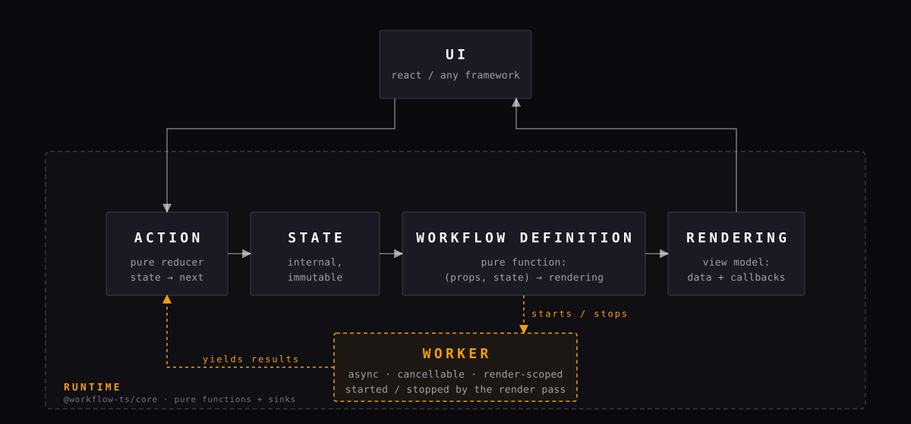

import { createWorker, type Worker, type Workflow } from '@workflow-ts/core';
// Props: inputs from the hosting screen or parent workflow.
export interface Props { userId: string }
// State: every meaningful step the screen can be in, as a tagged union.
// There are no illegal combinations; the machine is always in exactly one case.
export type State =
| { type: 'loading' }
| { type: 'loaded'; name: string }
| { type: 'error'; message: string };
// Output: events this workflow emits upward to its parent.
export interface Output { type: 'closed' }
// Rendering: the framework-agnostic view model. One shape per state.
// The UI only ever sees one of these; callbacks are how it sends events back.
export type Rendering =
| { type: 'loading'; close: () => void }
| { type: 'loaded'; name: string; reload: () => void; close: () => void }
| { type: 'error'; message: string; retry: () => void; close: () => void };
export const profileWorkflow: Workflow<Props, State, Output, Rendering> = {
// Start in 'loading'. A snapshot can override this during rehydration.
initialState: () => ({ type: 'loading' }),
// render() runs on every state change. Pure function of (props, state).
// It returns a Rendering and may start render-scoped workers for async work.
render: (_props, state, ctx) => {
switch (state.type) {
case 'loading':
// Start the profile-load worker while this state is active.
// When the worker resolves, its result becomes the next state.
// If we leave 'loading' before it finishes, the worker is cancelled.
ctx.runWorker(loadProfileWorker, 'profile-load', (r) => () => ({
state: r.ok
? { type: 'loaded', name: r.name }
: { type: 'error', message: r.message },
}));
return { type: 'loading', close: () => emitClosed(ctx) };
case 'loaded':
return {
type: 'loaded',
name: state.name,
// Reload sends an action that transitions back to 'loading',
// which (above) restarts the worker. No imperative fetch here.
reload: () => ctx.actionSink.send(() => ({ state: { type: 'loading' } })),
close: () => emitClosed(ctx),
};
case 'error':
return {
type: 'error',
message: state.message,
// Retry is the same transition as reload: go back to 'loading'.
retry: () => ctx.actionSink.send(() => ({ state: { type: 'loading' } })),
close: () => emitClosed(ctx),
};
}
},
};
TypeScript · State Machines · UI-Agnostic Core
Your UI has states.
Start treating them that way.
workflow-ts is a TypeScript implementation of Square's Workflow architecture. Explicit states. Unidirectional actions. Render-scoped workers. A framework-agnostic core with React bindings in a separate package.
- 4.68 kB gzip @workflow-ts/core
- 9 kB gzip @workflow-ts/react
- 0 runtime deps core package
- 100% typed strict mode
§ 01
Why a workflow?
Most UI code accretes flags: isLoading, hasError,
submittedOnce, didRehydrate. The machine becomes implicit and
untestable. workflow-ts makes the states explicit and the transitions the only way
forward.
-
01
Explicit state
Each meaningful step is a tagged union variant. No more illegal combinations of booleans silently lingering between renders.
-
02
Unidirectional
Every change is an action — a pure reducer from state to next state, with an optional output for the parent. There is one way data flows.
-
03
Composable
Parent workflows render child workflows and map their outputs back into actions. State machines nest the way components do — but with contracts.
-
04
UI-agnostic
The core runtime has zero UI dependencies. React hooks live in a separate 9 kB package. Port to anything that can call a function.
-
05
Render-scoped workers
Async work starts and stops with the rendering that requested it. No stale fetches, no leaked timers. Cancellation is the default.
-
06
Testable without DOM
Drive a runtime directly, assert renderings, inject fake workers. Tests read like the state diagram they came from.
§ 02
The contract, in three files.
One workflow module. One React screen. One test. Same mental model everywhere.
import { useWorkflow } from '@workflow-ts/react';
import { profileWorkflow } from './workflow';
export function ProfileScreen({ userId }: { userId: string }) {
const rendering = useWorkflow(profileWorkflow, { userId });
switch (rendering.type) {
case 'loading':
return (
<section>
<h1>Profile</h1>
<p>Loading...</p>
<button onClick={rendering.close}>Close</button>
</section>
);
case 'loaded':
return (
<section>
<h1>Welcome {rendering.name}</h1>
<button onClick={rendering.reload}>Reload</button>
<button onClick={rendering.close}>Close</button>
</section>
);
case 'error':
return (
<section>
<h1>Profile</h1>
<p>{rendering.message}</p>
<button onClick={rendering.retry}>Retry</button>
<button onClick={rendering.close}>Close</button>
</section>
);
}
}import { createRuntime } from '@workflow-ts/core';
import { expect, it } from 'vitest';
import { profileWorkflow } from '../src/workflow';
it('transitions loading → loaded', () => {
const runtime = createRuntime(profileWorkflow, { userId: 'u1' });
expect(runtime.getRendering().type).toBe('loading');
expect(runtime.getState().type).toBe('loading');
runtime.send(() => ({ state: { type: 'loaded', name: 'Ada' } }));
const loaded = runtime.getRendering();
expect(loaded.type).toBe('loaded');
expect((loaded as Extract<typeof loaded, { type: 'loaded' }>).name).toBe('Ada');
runtime.dispose();
});
§ 03
The runtime, drawn to scale.
Props enter. State is explicit. Render produces a framework-agnostic Rendering. Actions and Worker results close the loop. Output bubbles up to the parent.

§ 04
Six concepts. That's the whole library.
- State A tagged union of every meaningful step the screen can be in.
- Action A pure reducer from state to next state, with optional output.
- Rendering The framework-agnostic view model: data plus callbacks.
- Worker Render-scoped async work with automatic cancellation.
- Composition Parent workflows render children and map their outputs back.
- Snapshot Serialize current state. Rehydrate through initialState later.
§ 05
Install & get reading.
Core
pnpm add @workflow-ts/coreZero runtime dependencies. 4.68 kB gzip.
React bindings
pnpm add @workflow-ts/reactA single hook: useWorkflow. SSR-safe.
AI agent skill
npx skills add BenedictP/workflow-tsInstallable $workflow-ts-architecture skill.